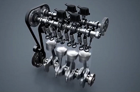
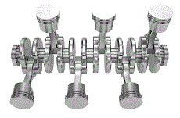
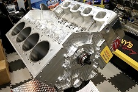
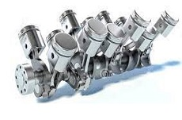
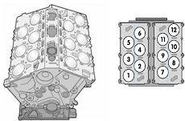

Il existe plusieurs types de moteurs mais les principaux sont:
- Le 4 cylindres en ligne dans : l'audi S3, la ford focus st ecoboost, la porshe 718 boxter, la subaru brz, la ford mustang ecoboost et bien d'autres

-Le 6 cylindres en ligne dans : la BMW M3 E36 3.2, l'Aston Martin DB4 GT, la Porsche 911 2.7 Carrera RS et bien d'autres
-Le 6 cylindres en V (v6) dans : l'alfa Roméo 147 et 156 GTA, la mercedes amg C32, la nissan 350Z, la bmw M3 E46 et bien d'autres

-Le 8 cylindres en V (v8) dans : l'audi s6 C5, le porshe cayenne S, la jaguar XKR, la maserati quattroporte, la mercedes C63 amg et bien d'autres

-Le 10 cylindres en V (v10) dans : la lamborghini huracan evo, la lexus LFA, la bmw m5 e60 v10 et bien d'autres

-Le 12 cylindres en V (12) dans : la ferrari 812 Competizione, l'Aston Martin DB11, la Bentley Continental GT Speed et bien d'autres

-Le 16 cylindres en W (w16) très rarement utilisé car très puissant et très gros. Il est surtout utilisé par Bugatti dans la Veyron, la Chiron, la Voiture noire